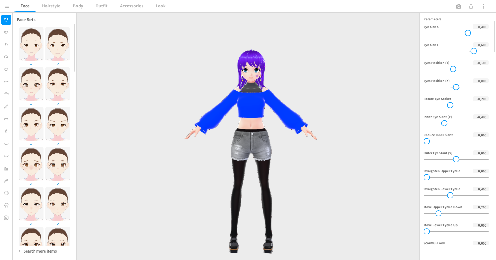
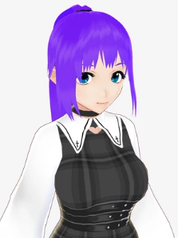
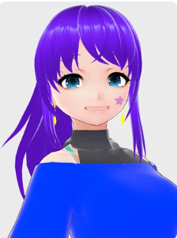
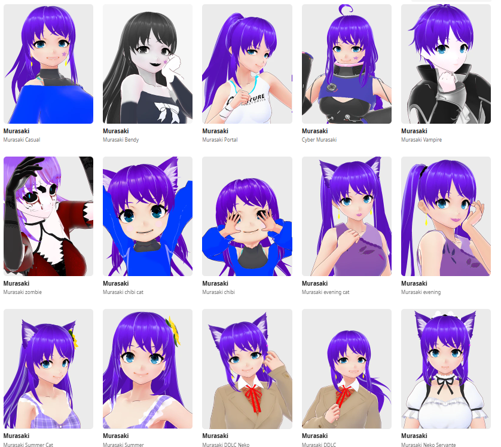
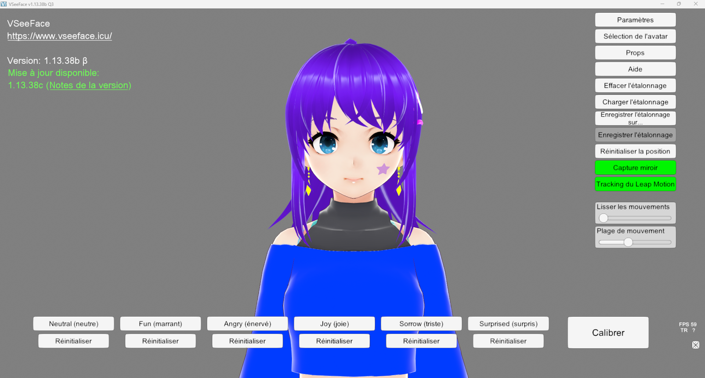
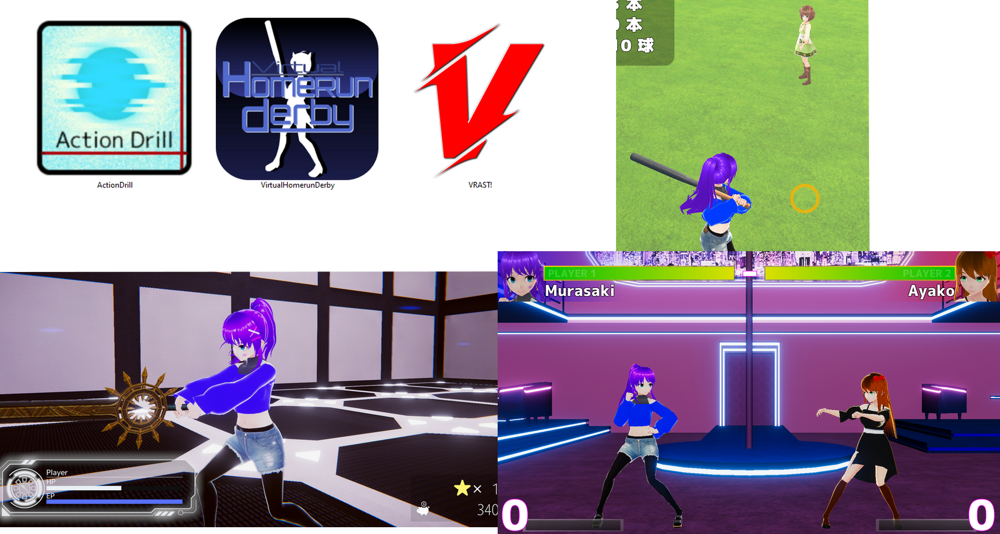

Pendant mon temps libre, je réalise des avatars à partir de Vroid Studio, une application permettant de créer des avatars pour le Vtubing et les créateurs de contenus qui souhaitent avoir des avatars 3D. L'application met à disposition une base et l'utilisateur est libre de réaliser son avatar comme il le souhaite, il y a différents menus pour différentes actions :
- Le visage
- L'expression facial
- Les cheveux
- Le corps
- Les vêtements
- Les accessoires
L'application possède de nombreuseux modèles à utiliser et à personnaliser. Néanmoins, tout n'est pas possible sur Vroid Studio, principalement du côté accessoire, seuls les lunettes, oreille, queue et chapeau sont disponibles (les chapeaux ne sont présents que depuis 2025).
Les cheveux sont sûrment la partie la plus personnalisable, de nombreux paramètres sont disponibles ce qui leur permet d'être n'importe quoi (accessoires, nœuds,...). Chaque élément a énormément de paramètres et de personnalisation, mais les cheveux sont vraiment un élemments polivalent.

Mais assez parlé de Vroid Studio, depuis 2021 je réalise des avatars sur cette application. Après plusieurs avatars, j'ai créé la toute première version de mon avatar actuel Murasaki. Ce n'est pas le plus bel avatar avatar que j'ai réalisé mais il n'a pas duré longtemps.

Quelques temps plus tard, il y a eu la sortie officielle de Vroid Studio 1.0, la mise à jour de l'application apportait de nombreux changements et de nouvelles fonctionnalités. J'ai pu améliorer ma Murasaki. Une meilleure coupe de cheveux, une meilleure tête et des boucles d'oreilles (faites en cheveux bien évidemment, oui les cheveux peuvent tous faire).

J'ai également réalisé plusieurs autres tenues pour Murasaki, des tenues plus classiques comme l'original, une robe de soirée, une tenue de servante, un maillot de bain, des tenues de jeu vidéo (DDLC, Portal2, Bendy), des tenues d'Halloween (Vampire et zombie) et plus encore.

Mais pour quelle raison j'ai créé cet avatar, la réponse est simple, pour plein de choses.
Tout d'abord, pour faire du contenu sur internet comme des lives sur Twitch, j'utilise une application nommée VSeeFace, qui permet de tracker mon visage avec une Weebcam et de retranscrire mes mouvements de tête et de mon visage ainsi que mes expressions.

Dans divers jeux créés par la communauté où nous pouvons contrôler nos avatars dans différents jeux.

Ou encore dans des animations.